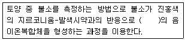
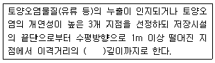
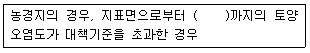
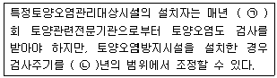
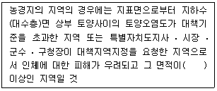
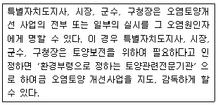
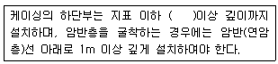
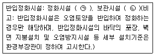

토양환경기사 (2017-09-23 기출문제)
1과목: 토양학개론
1. 지하수 오염물질 이동 수치 해석 모델의 주요 입력 변수가 아닌 것은?
- 경계조건과 초기조건
- 대수층 수리특성
- 시간 및 공간 요소(element) 특성
- 토양의 밀도 및 압축성
(정답률: 54%)

2. Middleton의 토양침식률 계산에 사용되는 인자가 아닌 것은?
- 교질함량
- 토양수분당량
- 분산율
- 투수계수
(정답률: 43%)
3. 전세계에 분포하는 토양목 중 습한 지역에서 주로 생성되며 유기물 집적이 많은 토양목은?
- Oxisols
- Andosols
- Histosols
- Entisols
(정답률: 79%)
4. 토양수직단면에 성층구조를 바르게 설명한 것은?
- A층 : 유기물층
- B층 : 용탈층
- C층 : 모재층
- O층 : 집적층
(정답률: 78%)
5. 토양수분 중 흡습수에 관한 설명으로 가장 거리가 먼 것은?
- 습도가 높은 대기 중에 토양을 놓아두었을 때 대기로부터 토양에 흡착되는 수분이다.
- pF 4.5 이상이다.
- 결합수와 달리 식물이 직접 흡수 이용할 수 있다.
- 1⑤~110℃에서 8~9시간 건조시키면 제거 된다.
(정답률: 68%)
6. 공극률 0.2, 다시안 유속(Darcian velocity) 0.2cm/hr인 포화대수층의 공극에서 실제 지하수가 이동하는 속도(cm/hr)는?
- 0.2
- 0.4
- 5.0
- 1.0
(정답률: 75%)
7. A(식토), B(미사), C(양질사토)의 토양에 대한 비표면적을 크기순으로 배열한 것은?
- B ＞ A ＞ C
- A ＞ B ＞ C
- C ＞ A ＞ B
- A ＞ C ＞ B
(정답률: 73%)
8. 버미큘라이트(vermiculite)에 관한 설명으로 틀린 것은?
- CEC는 10~40meq/100g으로 클로라이트와 유사하다.
- 2 : 1 격자형 광물이다.
- 단위층간의 결합력이 약하여 수분함량이 증가하면 팽창된다.
- 풍화작용에 의해 일라이트(illite)의 층간을 결합하는 이 전부 또는 대부분 빠져 나간 것을 말한다.
(정답률: 57%)
9. 점토 광물(clay minerals) 중 2 : 2형의 대표적인 것은?
- 카올리나이트(kaolinite)
- 할로이사이트(halloysite)
- 몬모릴로나이트(montmorillonite)
- 클로라이트(chlorite)
(정답률: 72%)
10. 유기물 함량 2%, 점토 함량 6%, 전용적밀도(Db) 1.5g/m3, 입자밀도(Dp) 3.0g/cm3인 토양의 공극률(%)은?
- 9
- 12
- 45
- 50
(정답률: 56%)
11. 카드뮴 및 그 화합물이 인체에 미치는 영향으로 가장 거리가 먼 것은?
- 급성증상 : 구토 등 소화기 증상, 기관지염, 폐기종, 빈혈, 신장 결석
- 신장피질에 축적 : 미나마타병의 경우 신장이 비가역적으로 손상
- 저농도 장기간 노출 : 고혈압
- 고농도 노출 : 돌연변이, 암 유발
(정답률: 84%)
12. 오염물질 저감에 기여하는 요소가 아닌 것은?
- 표면흡착
- 분자확산
- 고체내부 확산
- 침전
(정답률: 41%)
13. 산성우의 토양에 대한 영향으로 가장 거리가 먼 것은?
- 양이온, 주로 HCO3+, Mg2+의 용탈 증대
- HCO3-농도의 감소
- ALSO4의 침전에 의한 토양 용액의 PO4농도의 증가
- Zn, Cd 등의 중금속이 토양 용액으로 용출
(정답률: 68%)
14. 일반적인 토양공기에 관한 설명으로 틀린 것은?
- 상대습도는 대기보다 높다.
- 탄산가스의 함량은 대기보다 높다.
- 산소의 함량은대기보다 낮다.
- 아르곤의 함량은 대기보다 낮다.
(정답률: 75%)
15. 나트륨토양을 개량하는 방법으로 적합하지 않은 것은?
- 지하수위가 높을 경우 배수에 의해 수위를 낮춘다.
- 석회 자체를 투입하여 치환성 Ca 포화도를 높인다.
- 내알칼리, 내침수성 식물을 재배하여 유기질 잔사를 포장하여 환원시킨다.
- 제염관개로 NaOH, NaHCO3, Na2CO3를 표층토로 이동시킨다.
(정답률: 61%)
16. 토양에서 일어나는 양이온교환반응의 중요성(농업생산성과 관련)에 관한 설명으로 틀린것은?
- 치환성 K, Ca, Mg 등은 식물영양소의 주된 공급원이다.
- 산성 토양의 pH를 높이기 위한 석회요구량은 CEC가 클수록 적어진다.
- 중금속을 흡착하여 지하수 및 지표수로의 이동을 억제한다.
- 토양에 비료로 사용한 K+, NH4+등은 토양에서 이동성이 급격하게 감소된다.
(정답률: 69%)
17. 유기오염물질의 생물학적 분해에 영향을 미치는 토양 특성으로 가장 거리가 먼 것은?
- 토양미생물 유형
- 토양수분 함량
- 토양 pH
- 양이온교환용량
(정답률: 56%)
18. 토양전체부피 중에서 토양입자의 부피만을 제외한 부피는?
- 공극률
- 수분부피함량
- 가스부피함량
- 토양단위용적밀도
(정답률: 74%)
19. 대수층의 비보유율(Sr)이 0.2이고, 공극률이 0.3일 때, 비산출률(Sy)은? (단, 모래 내에 지하수의 중력 배수 기준)
- 0.1
- 0.15
- 0.2
- 0.6
(정답률: 70%)
20. 토양시료에서 회분석시험을 실시한 결과 카드뮴의 분배계수가 3.34이었을 때의 지연계수는? (단, 공극률 = 0.3, 건조단위중량 = 1.35g/m)
- 15.03
- 16.03
- 1.74
- 0.74
(정답률: 40%)
2과목: 토양 및 지하수 오염조사기술
21. 시안분석(자외선/가시선 분광법)에 대한 설명으로 틀린 것은?
- 시안화합물은 측정할 때 방해물질들은 증류하면 대부분 제거된다.
- 잔류염소가 함유된 시료는 잔류염소 20mg 당 L-아스코르빈산(10%) 0.6mL 또는 아비산 나트륨 용액(10%) 0.7mL를 넣어 제거한다.
- 황화합물이 함유된 시료는 아세트산 아연용액(10%) 2mL를 넣어 제거한다.
- 다량의 지방성분을 함유한 시료는 pH4 이하로 조절한 후 시료에 약 10%에 해당하는 부피의 노말헥산 또는 클로로포름으로 추출하여 제거한다.
(정답률: 56%)
22. 토양오염 위해성평가 시 유류의 노출경로에 해당되지 않는 것은?
- 지하수섭취
- 토양섭취
- 농작물섭취
- 토양접촉
(정답률: 54%)
23. 토양오염공정시험기준 중 pH의 측정과 관련 없는 것은?
- 전극을 넣을 때 토양 현탁을 만들어 주고 곧 넣어서 측정한다.
- pH 11 이상의 시료는 특수전극을 사용할 수 있다.
- 토양을 오랫동안 방치하면 미생물 작용으로 pH가 저하될 수 있다.
- 일반적으로 토양 중 염류의 농도가 높아지면 pH 값이 높아진다.
(정답률: 53%)
24. 원자흡수분광광도법에 대한 설명으로 가장 거리가 먼 것은?
- 장치는 광원부 - 시료원자화부 - 단색화부 - 측광부로 배열된다.
- 광원은 원자흡광 스펙트럼선의 선폭보다 좁은 선폭을 갖고 휘도가 높은 스펙트럼을 방사하는 중공음극램프가 많이 사용된다.
- 원자흡광분석에 사용되는 어떠한 불꽃이라도 가연성가스와 조연성가스의 혼합비는 감도의 크게 영향을 준다.
- 표준첨가법에 의한 검량선 작성은 측정치가 흩어져 상쇄하기 쉬우므로 분석값의 제한성이 높다.
(정답률: 34%)
25. 자외선/가시선 분광법을 적용한 불소 측정에 관한 설명으로 ( )에 옳은 내용은?

- 무색
- 청색
- 황갈색
- 적자색
(정답률: 74%)
26. 불소의 함량을 측정하고자 할 때 검량선에서 얻어진 불소의 농도가 1.2mg/L 이었다면 토양 중 불소의 함량(mg/kg)은? (단, 토양시료의 건조중량 = 1.0g, 시약바탕 시험용액의 불소 농도 = 0.2mg/L)
- 500
- 600
- 650
- 750
(정답률: 32%)
27. BTEX 표준용액 (각 성분의 농도 = 20mg/L) 2를 퍼지ㆍ트랩에 주입할 경우 기체크로 마토그래프에서 정량되는 이들의 절대량 총합(ng)은?
- 80
- 160
- 200
- 240
(정답률: 33%)
28. 용기 중 취급 또는 저장하는 동안에 이물질이 들어가거나 또는 내용물이 손실되지 아니하도록 보호하는 용기는?
- 밀폐용기
- 기밀용기
- 밀봉용기
- 밀입용기
(정답률: 78%)
29. 토양오염관리대상시설지역에서의 시료채취지점 선정에 관한 내용으로 ( )에 옳은 내용은? (단, 부지 내, 지성저장시설 기준)

- 1.2배
- 1.5배
- 2.0배
- 2.5배
(정답률: 79%)
30. BTEX를 퍼지-트랩 기체크로마토그래피-질량 분석법을 적용하여 측정할 때 각 항목별 정량한계(mg/kg)은?
- 0.1
- 0.5
- 1.0
- 5.0
(정답률: 50%)
31. 유도결합플라즈마발광광도법에 대한 설명으로 틀린 것은?
- 시료를 고주파유도코일에 의해 형성된 아르곤 플라즈마에 도입하여 분석한다.
- 중금속 원자의 바닥상태(ground state)에서 여기상태(excite state)로 이동할 때 흡수되는 발광선 및 발광강도를 측정하여 정성 및 정량분석한다.
- 플라즈마 자체가 광원으로 이용되기 때문에 매우 넓은 농도범위에서 측정이 가능하다.
- ICP의 구조는 중심에 저온, 저전자 밀도의 영역이 형성되어 도너츠 형태로 되는 것이 특징이다.
(정답률: 51%)
32. 토양오염공정시험기준에서 정의하는 온도에 대한 설명으로 틀린 것은?
- 온수 : 60~70℃
- 상온 : 10~20℃
- 실온 : 1~35℃
- 찬곳 : 0~15℃
(정답률: 67%)
33. 석유계총탄화수소를 기체크로마토그래피로 측정할 때의 설명으로 틀린 것은?
- 정량한계는 석유계총탄화수소로 50mg/kg이다.
- 비극성과 약한 극성화합물(즉 할로겐화 탄화수소)과 극성 화합물의 함량이 많을 경우 분석을 간섭할 수 있다.
- 정확도는 측정값의 상대표준편차(% RSD)로 산출하며 그 값이 15%이내 이어야 한다.
- 채취한 시료를 즉시 시험 할 수 없을 경우 0~4℃ 냉암소에 보존하고 14일 이내에 추출 하여야 하며, 시료채취일로부터 40일 이내에 분석하여야 한다.
(정답률: 70%)
34. 기체크로마토그래피에서 검량선 작성 시 사용하는 내부표준물질의 조건으로 가장 거리가 먼 것은?
- 목적성분과 물리화학적 성질이 유사한 것
- 목적성분 피이크의 위치에 가능한 가까울 것
- 시료중의 다른 성분 피이크와 안정하게 분리되는 것
- 화학적으로 반응성이 큰 것
(정답률: 65%)
35. 지하매설저장시설에 대한 설명으로 옳은 것은?
- '부속배관'이라 함은 부속배관의 경로 중 지하에 매설되어 누출여부를 육안으로 직접 확인 할 수 없는 배관을 말한다.
- '지하매설배관'이라 함은 지하매설저장시설과 부속배관, 부속배관과 배관을 연결하기 위하여 용접접합 또는 나사조임방식 등으로 접속한 부분을 말한다.
- '누출검지관'이라 함은 액체의 누출여부를 누출감사대상시설 외부에서 직접 또는 간접적으로 확인하기 위해 설치된 관을 말한다.
- '배관접속부'라 함은 지하매설저장시설의 용접 또는 나사조인 방식으로 직접 연결되는 배관을 말한다.
(정답률: 64%)
36. 토양 중 6가 크롬을 측정하기 위한 자외선/가시선 분광광도계의 흡수셀에 대한 설명으로 틀린 것은?
- 시료액의 흡수파장이 약 370nm이상 일 때는 석영 또는 경질유리 흡수셀을 사용한다.
- 시료액의 흡수파장이 약 370nm이하 일 때는 석영 흡수셀을 사용한다.
- 따로 흡수셀의 길이를 지정하지 않았을 때는 15mm셀을 사용한다.
- 흡수셀이 더러우면 측정값에 오차가 발생하므로 세척하여 사용한다.
(정답률: 59%)
37. 토양정밀조사지침에 의한 기초조사 내용에 포함되지 않는 것은?
- 토지사용 이력조사
- 시설내역조사
- 오염물질 성상 확인 및 분석
- 오염물질의 진행방향 및 오염범위 추정
(정답률: 42%)
38. 수분함량 측정 시 1⑤~110℃ 건조기 안에서의 토양건조시간은 얼마 이상으로 항량이 될 때까지 건조시켜야 하는가?
- 1시간
- 2시간
- 3시간
- 4시간
(정답률: 70%)
39. 토양시료 중 BTEX 시료보관에 관한 기준으로 적절한 것은?
- 시험관에 채취된 시료를 즉시 실험할 수 없는 경우에는 0~4℃ 냉암소에서 보관하고 7일 이내 분석해야 한다.
- 시험관에 채취된 시료를 즉시 실험할 수 없는 경우에는 0~4℃ 냉암소에서 보관하고 14일 이내 분석해야 한다.
- 시험관에 채취된 시료를 즉시 실험할 수 없는 경우에는 질산을 주입하여 pH2 이하에서 보관하고 7일 이내 분석해야 한다.
- 시험관에 채취된 시료를 즉시 실험할 수 없는 경우에는 질산을 주입하여 pH2 이하에서 보관하고 14일 이내 분석해야 한다.
(정답률: 56%)
40. 토양 중의 폴리클로리네이티드비페일(PCB)을 기체크로마토그래프로 분석할 때 적당한 검출기는?
- 열전도도 검출기(TCD)
- 불꽃이온화 검출기(FID)
- 전자포착형 검출기(ECD)
- 불꽃광도형 검출기(FPD)
(정답률: 66%)
3과목: 토양 및 지하수 오염정화 기술
41. 토양 열처리프로세스 종류에 해당하지 않는 것은?
- 로터리 탈착장치
- 열스쿠르
- 회분식 탈착장치
- 마이크로파 탈착장치
(정답률: 50%)
42. 다음 오염물질 중 토양증기추출법의 적용이 가장 용이한 것은?
- PAH
- PCB
- TCE 및 PCE
- PCDD
(정답률: 70%)
43. 폐광산에서 유출되는 산성광산배수의 처리를 위한 기술로 틀린 것은?
- SAPS(successive alkalinity producing system)
- 인공 소택지법(호기성, 혐기성)
- 산화ㆍ응집공법(ALD: alkalinity lime draining)
- DW(diversion well)
(정답률: 63%)
44. 열탈착기술의 2차 오염물질과 제어방법이 잘못 열결된 것은?
- 미세입자 - 사이클론
- 다이옥신 - 집진장치
- 배가스 유기물 - 활성탄
- 산성 증기 - 벤투리세정기
(정답률: 57%)
45. 수직방어벽인 슬러리월에 관한 설명으로 틀린 것은?
- 지하수의 흐름을 다른 곳으로 우회시켜 오염되지 않은 지하수를 오염된 지역으로 격리 시킨다.
- 지하수의 흐름을 다른 곳으로 우회시켜 오염물질의 분해 또는 지체효과를 감소시킨다.
- 낮은 수리전도도를 가진 흙이나 가용한 다른 첨가제 등 오염물질의 거동을 제어하는 물질을 지중 트렌치에 채운다.
- 투수계수가 다소 높은 지역에 유용하다.
(정답률: 56%)
46. 지하수 내 밴젠의 농도가 50mg/L이다. 일차감쇄 상수(first-order decay rate)가 0.0⑤ay-1 때 3년 후 지하수 내 밴젠의 농도(mg/L)는?
- 0.21
- 0.31
- 0.41
- 0.51
(정답률: 45%)
47. 오염토양을 처리하는 생물학적 기술은?
- 토양경작법
- 토양세정법
- 용제추출법
- 안정화법
(정답률: 75%)
48. 지중생물학적 정화법의 설계인자에 대한 설명 중 가장 알맞지 않은 것은?
- 수리전도도가 비교적 낮은 투수계수(10-4∼10-6cm/sec)에서는 효과적이지 않다.
- 미생물의 수가 1000 CFU/g 이상인 경우에는 높은 처리효율을 기대할 수 없다.
- 중금속 2500ppm 이상인 경우 호기성 미생물을 생육을 방해할 수 있다.
- TPH 50000ppm 이상인 경우 호기성 미생물을 생육을 방해할 수 있다.
(정답률: 66%)
49. 열탈착법의 장ㆍ단점으로 틀린 것은?
- 수분함량이 높은 오염토의 전처리가 필요 없는 장점이 있다.
- 빠른 처리가 가능한 장점이 있다.
- 토양 굴착이 필요한 단점이 있다.
- 운영을 위한 큰 부지가 필요하다는 단점이 있다.
(정답률: 76%)
50. 고형화 또는 안정화에서 첨가되는 화학물질로서 가장 적절치 않은 것은?
- 착염물질
- 포틀랜드시멘트
- 회분(fly ash)
- 점토
(정답률: 55%)
51. 일반적으로 유기화학물질의 생분해능은 화합물의 분자구조에 의해 크게 좌우된다. 다음중 난분해성의 경향을 갖지 않는 화합물은?
- 할로겐화된 화합물
- 가지구조가 많은 화합물
- 물에 대한 용해도가 낮은 화합물
- 원자의 전하차가 적은 화합물
(정답률: 82%)
52. 생물학적 처리방법 중에서 [오염토양 조건 - 처리방법 - 처리대상오염물질]을 잘못 짝지은 것은? (단, 처리 위치는 원위치 기준)
- 불포화 토양층 - bioventing - BTEX
- 불포화 토양층 - 바이오필터 - PAHs
- 포화 토양층 - 침투성 생물반응벽 - 생분해 가능한 유기오염물질
- 포화 토양층 - 자연정화법 - 유류, 염소계유기화합물
(정답률: 57%)
53. 토양경작법으로 처리하기에 가장 부적합한 경우는?
- 95% 정화 목표를 가지고 있는 오염토양
- 28% 수분 함유 오염토양
- 토양경작 기간 중 50mm의 강우가 내린 경우
- pH 4.9 상태에서 석회석과 혼합한 오염토양
(정답률: 56%)
54. 매립지에서 염소의 농도가 1500mg/L인 침출수가 누출되어 다음과 같은 특성을 지닌 대수층으로 유입되고 있다. 아래에 주어진 자료를 활용하여 구한 평균선형유속(m/s)은? (단, 수리전도도 = 3.0 x 10-3cm/s, dh/dl = 0.002, 유효공극률 = 0.30)
- 2.0 x 10-7
- 2.0 x 10-5
- 4.5 x 10-7
- 4.5 x 10-5
(정답률: 38%)
55. 매립지 최종 복토층의 가스 배제층 설치에 따른 이점으로 틀린 것은?
- 상부 식생대층의 식물 및 미생물에 대한 독성영향을 저감시킨다.
- 가스압에 의한 차수층의 균열발생의 위험성을 감소시킨다.
- 매립가스를 포집하여 에너지원으로 사용할 수 있다.
- 매립가스의 지속적 대기 배출로 신속한 매립지의 안정화를 기한다.
(정답률: 64%)
56. 지중에서 생물학적 처리를 할 경우 미생물이 전자수용체로서 우선적으로 사용되는 물질의 순서가 맞는 것은?
- 산소 ＞ 질산성질소 ＞ 황산이온 ＞ 망간산화물
- 질산성질소 ＞ 황산이온 ＞ 망간산화물 ＞ 산소
- 망간산화물 ＞ 황산이온 ＞ 질산성질소 ＞ 산소
- 산소 ＞ 질산성질소 ＞ 망간산화물 ＞ 황산이온
(정답률: 48%)
57. 화학적산화법을 적용하여 오염토양을 정화하는 경우의 유의사항에 대한 설명으로 틀린것은?
- 부지내에 비수용액체상(NAPL)이 존재하는 경우 이를 회수하거나 처리해야 한다.
- 지하저장조나 배관 등의 지장물이 있는 경우
- 오염지역에 투수성이 낮은 토양이 존재하는 경우에는 충분한 접촉시간을 고려하여야 한다.
- 토양내에 휴믹질 등 유기물이 존재하는 경우에 보다 효율적이다.
(정답률: 70%)
58. 토양의 생성작용을 바르게 기술한 것은?
- 포드졸(podzol)화작용은 한랭습윤한 지역에서 관찰된다.
- 라테라이트(laterite)화작용은 고온건조한 기후에서 관찰된다.
- 글레이(glei)화작용은 배수가 용이한 화강암의 풍화지역에서 관찰된다.
- 염류화작용은 고온다습한 기후에서 관찰된다.
(정답률: 63%)
59. 오염지하수를 2m 두께의 반응벽체로 처리하고자 한다. 지하수Darcy속도가 4m/d인 조건에서 반응벽체 내 체류시간을 6시간으로 설계하고자 할 경우 반응벽체의 공극률은?
- 0.40
- 0.45
- 0.50
- 0.55
(정답률: 58%)
60. 토양증기추출의 적용조건으로 틀린 것은?
- 객토에 의한 처리가 불가능한 경우
- 처리대상 토양의 양이 소규모일 경우
- 오염물질의 헨리상수 0.01이상
- 상온에서 휘발성을 갖는 유기물질
(정답률: 55%)
4과목: 토양 및 지하수 환경관계법규
61. 토양보전대책지역의 지정기준으로 ( )에 맞는 것은?

- 90cm
- 60cm
- 30cm
- 10cm
(정답률: 75%)
62. 토양오염도 검사 수수료 중 시료채취비에 관한 설명으로 옳은 것은?
- 62700원/공
- 71900원/공
- 91900원/공
- 114000원/공
(정답률: 74%)
63. 특정토양오염관리대상시설의 토양오염검사에 관한 설명으로 ( )에 적합한 것은?

- ㉠ 1, ㉡ 2
- ㉠ 1, ㉡ 5
- ㉠ 2, ㉡ 2
- ㉠ 2, ㉡ 5
(정답률: 52%)
64. 토양보전대책지역의 지정기준에 관한 내용으로 ( )의 내용으로 옳은 것은?

- 1만 제곱미터
- 2만 제곱미터
- 3만 제곱미터
- 5만 제곱미터
(정답률: 67%)
65. 토양관련전문기관의 결격사유가 아닌 것은?
- 피성년후견인 또는 피한정후견인
- 파산선고를 받고 복권되지 아니한 사람
- 임원 중에 피성년후견인 또는 피한정후견인에 해당하는 사람이 있는 법인
- 토양관련전문기관 지정이 취소된 후 5년이 지나지 아니한 자
(정답률: 52%)
66. 특정토양오염관리대상시설별 토양오염검사항목 중 석유류의 제조 및 저장시설과 관련이 없는 것은?
- 벤젠
- 에틸벤젠
- 석유계총탄화수소(TPH)
- 페놀
(정답률: 62%)
67. 다음 기관 중 토양오염조사기관이 아닌 것은?
- 시ㆍ도 보건환경연구원
- 국립환경과학원
- 유역환경청
- 농림토양과학원
(정답률: 44%)
68. 환경부장관 또는 시장ㆍ군수ㆍ구청장이 청문을 실시하여야 하는 경우에 해당하는 것은?
- 토양정화업의 등록취소
- 토양관련전문기관에 대한 업무정지
- 오염된 토양의 정화 조치
- 토양오염유발시설의 이전
(정답률: 56%)
69. 지하수의 개발ㆍ이용의 허가 시 시장, 군수가 허가를 하지 않거나 취수량을 제한하는 경우는?
- 동력장치를 사용하지 아니하고 가정용 우물 또는 공동우물을 개발ㆍ이용하는 경우
- 지하수의 채취로 인하여 인근지역의 수원의 고갈 또는 지반의 침하를 가져올 우려가 있거나 주변시설물의 안전을 해할 우려가 있는 경우
- 「국방ㆍ군사시설 사업에 관한 법률」제2조의 규정에 의한 국방ㆍ군사시설사업에 의하여 설치된 시설에서 지하수를 개발ㆍ이용하는 경우
- 자연히 흘러나오는 지하수 또는 다른 법률의 규정에 의한 허가ㆍ인가 등을 받거나 신고를 하고 시행하는 사업 등으로 인하여 부수적으로 발생하는 지하수를 이용하는 경우
(정답률: 59%)
70. 다음에서 언급한 환경부령으로 정하는 토양관련전문기관은?

- 국립환경과학원
- 유역환경청 또는 지방환경청
- 시ㆍ도 보건환경연구원
- 한국환경공단
(정답률: 74%)
71. 토양환경보전법령에서 정하고 있는 오염토양의 정화방법으로 가장 거리가 먼 것은?
- 오염물질의 분리추출
- 오염물징의 매립
- 오염물질의 소각
- 오염물질의 차단
(정답률: 51%)
72. 지하수의 수질보전 등에 관한 규칙상 수질검사대상이 되는 농업용수 및 어업용수용 지하수 양수 능력 기준은?
- 1일 10톤 이상
- 1일 20톤 이상
- 1일 50톤 이상
- 1일 100톤 이상
(정답률: 59%)
73. 정화책임자가 오염토양을 직접 정화할 수 있는 경우가 아닌 것은?
- 유류에 인한 오염토양으로서 그 양이 8세제곱미터인 것
- 군사활동으로 인한 오염토양으로서 그 양이 32세제곱미터인 것
- 유기용제에 의한 오염토양으로서 그 양이 4세제곱미터인 것
- 군부대시설안의 오염토양으로서 그 양이 19세제곱미터인 것
(정답률: 52%)
74. 환경부장관이 토양관리단지 조성계획을 수립헐 때 포함되어야 하는 사항으로 틀린 것은?
- 교통시설 등 주요 기반시설 설치 및 운영계획
- 환경보전계획
- 조성 대상 부지의 확보 방안
- 오염토양 정화 처리 계획 및 방안
(정답률: 46%)
75. 지하수오염방지시설의 설치기준 중 상부보호공을 설치하는 지하수오염방지시설의 세부 설치기준으로 ( )에 맞는 내용은?

- 10m
- 5m
- 3m
- 2m
(정답률: 64%)
76. 토양보전대책지역을 지정하는 권한을 가진 자는?
- 환경부장관
- 시ㆍ도지사
- 지방환경관서의 장
- 시장ㆍ군수ㆍ구청장
(정답률: 58%)
77. 지하수의 개발ㆍ이용에 관한 허가ㆍ인가 등을 받거나 신고를 한 자는 그 공사의 착공일 전까지 이행보증금을 현금 또는 국토교통부령이 정하는 보증서ㆍ유가증권 등으로 예치 하여야 한다. 이 때 이행보증금의 예치기간은?
- 공사의 착공일부터 1년
- 공사의 착공일부터 2년
- 공사의 착공일부터 3년
- 공사의 착공일부터 5년
(정답률: 46%)
78. 토양정화업의 등록요건 중 반입정화시성에 관한 기준으로 ( )에 알맞은 내용은?

- ㉠ 200제곱미터 이상, ㉡ 400제곱미터 이상
- ㉠ 400제곱미터 이상, ㉡ 200제곱미터 이상
- ㉠ 200제곱미터 이상, ㉡ 200제곱미터 이상
- ㉠ 400제곱미터 이상, ㉡ 400제곱미터 이상
(정답률: 66%)
79. 토양환경보전법에 명시된 용어의 정의가 틀린 것은?
- '토양오염관리대상시설'이란 토양오염물질을 생산ㆍ운반ㆍ저장ㆍ취급ㆍ가공 또는 처리 등으로 토양을 오염시킬 우려가 있는 시설ㆍ장치ㆍ건물ㆍ구축물 및 장소 등을 말한다.
- '토양오염물질'이란 토양오염의 원인이 되는 물질로서 환경부령이 정하는 것을 말한다.
- '특정토양오염관리대상시설'이란 토양을 오염시킬 우려가 있는 토양오염관리 대상시설로서 대통령령이 정하는 것을 말한다.
- '토양정화'란 생물학적 또는 물리ㆍ화학적 처리 등의 방법으로 토양중의 오염물질을 감소ㆍ제거하거나 토양 중의 오염물질에 의한 위해를 완화하는 것을 말한다.
(정답률: 63%)
80. 다음 중 지하수오염관측정의 설치 및 수질측정에 관한 설명으로 틀린 것은?
- 지하수오염유발시설의 경계선에서 지하수 주흐름의 상류방향으로 오염발생 이전의 대표적인 지하수의 수질을 채취ㆍ분석할 수 있는 지점에 1개소 설치
- 지하수오염유발시설의 경계선에서 지하수 주흐름의 하류방향으로 오염물질 성분이 주위 지하수층으로 이동하는 것을 즉시 탐지할 수 있는 지점에 3개소 이상 설치
- 지하수수질기준 항목중 일반오염물질과 전기전도도, 지하수위는 분기 1회 이상 측정
- 지하수수질기준 항목중 특정유해물질과 지하수오염유발시설로부터 검출가능성이 있는 유해물질은 월 1회 이상 측정
(정답률: 32%)